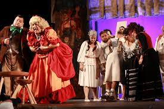
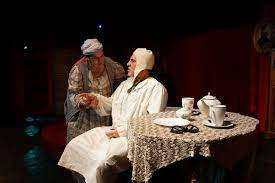
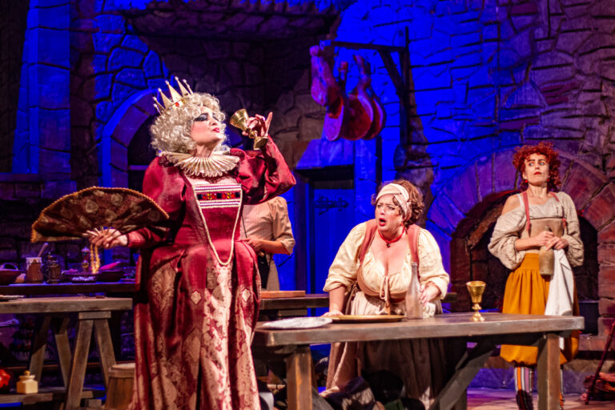
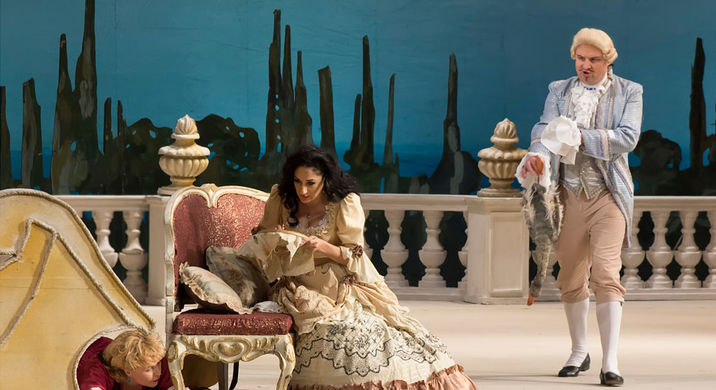
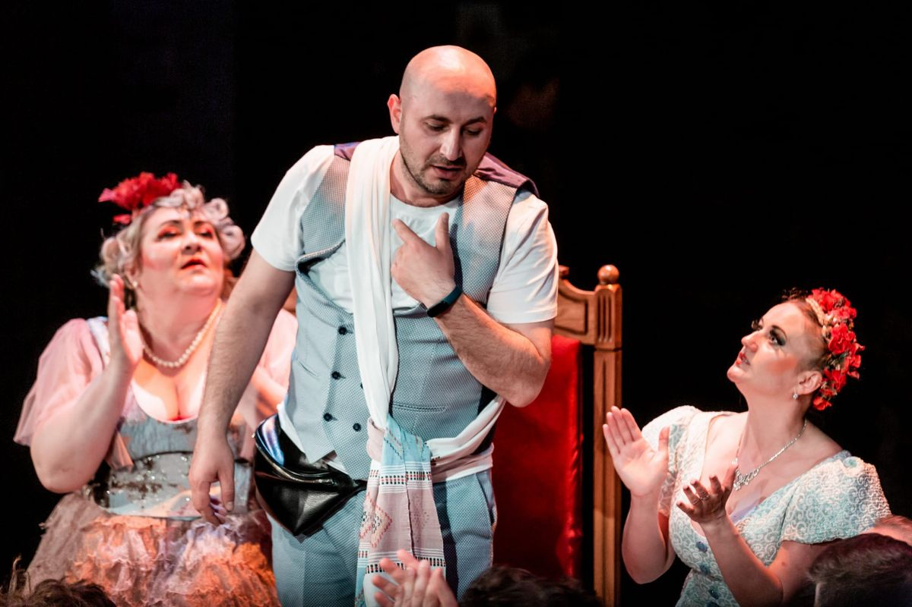
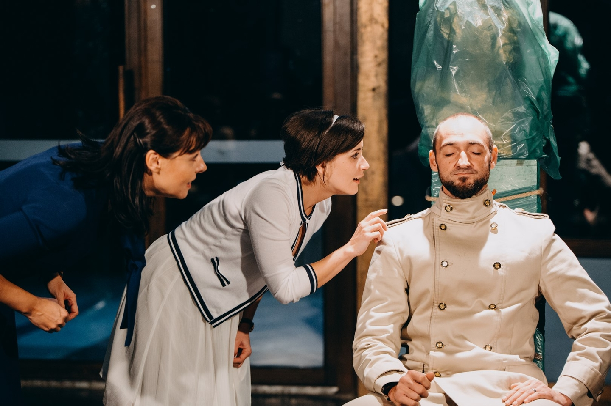

Chirita in provincie
O comedie satirică despre snobismul și prostia boierimii de provincie din secolul al XIX-lea. Personajul principal, Chirița Bârzoi, este o cucoană simplă, dar plină de aere de domnișoară de oraș, care vrea să pară „europeană” fără să înțeleagă nimic din rafinament. Alecsandri ironizează dorința de parvenire și imitația ridicolă a modei occidentale.

Conul Leonida in reactiune
O farsă politică scurtă și comică. Conu Leonida, un pensionar bătrân și temător, trăiește cu frica „reacțiunii” (contrarevoluției) și se crede un mare apărător al republicii. Când aude zgomote noaptea, el și soția lui, Efimița, cred că a izbucnit revoluția. Caragiale ironizează ignoranța politică, demagogia și frica absurdă.

Hamlet
Una dintre cele mai celebre tragedii ale literaturii universale. Prințul Hamlet al Danemarcei caută să răzbune moartea tatălui său, ucis de propriul frate, acum rege. Piesa explorează teme precum răzbunarea, nebunia, îndoiala, trădarea și sensul vieții. Monologul „A fi sau a nu fi” este un simbol al reflecției asupra existenței umane.

Nunta lui Figaro
O comedie spumoasă care critică aroganța nobilimii din Franța secolului XVIII. Figaro, servitor isteț, vrea să se căsătorească cu Suzanna, dar stăpânul său, contele Almaviva, încearcă să-i seducă mireasa. Printr-o serie de încurcături, intrigi și momente comice, Figaro reușește să-l învingă pe conte. Piesa anticipează ideele egalității și libertății de dinaintea Revoluției Franceze.

Revizorul
O satiră celebră a corupției și prostiei birocratice din Rusia țaristă. Un tânăr funcționar, Hlestakov, este confundat cu un inspector guvernamental venit să cerceteze orașul. Oficialii locali, corupți și speriați, încearcă să-l mituiască și să-l lingușească. Gogol dezvăluie, prin umor, ipocrizia și teama celor aflați la putere.

Trei surori
O dramă profundă despre visuri neîmplinite și monotonia vieții provinciale. Cele trei surori – Olga, Mașa și Irina – visează să se întoarcă la Moscova, orașul copilăriei lor, dar realitatea le ține captive într-un orășel plictisitor. Piesa surprinde timpul care trece, iluziile pierdute și neputința de a schimba viața.